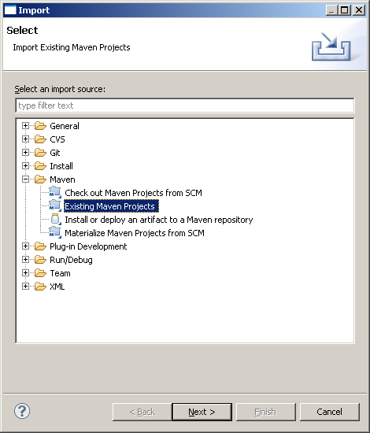

Eclipse IDE integration
Use Scala IDE bundle or add Scala IDE plugin to your existing Eclipse installation.
There is one problem with importing Play! project to Eclipse (as Maven project).
M2Eclipse does not treat such project as Java project, because maven-compiler-plugin’s compile and testCompile mojos are not part of play2 packaging lifecycle (sbt-compiler-maven-plugin’s compile and testCompile mojos are used instead).
A workaround is required (or a proper Eclipse plugin, which will be implemented later).
Import steps:
1. A workaround
Add this code snipped to project’s pom.xml file:
<profiles>
<profile>
<id>eclipse</id>
<build>
<plugins>
<plugin>
<groupId>org.apache.maven.plugins</groupId>
<artifactId>maven-compiler-plugin</artifactId>
<configuration>
<skipMain>true</skipMain>
<skip>true</skip>
</configuration>
<executions>
<execution>
<id>default-compile</id>
<goals><goal>compile</goal></goals>
</execution>
<execution>
<id>default-testCompile</id>
<goals><goal>testCompile</goal></goals>
</execution>
</executions>
</plugin>
</plugins>
</build>
</profile>
</profiles>
This adds eclipse profile with maven-compiler-plugin’s compile and testCompile mojos.
This profile is intended to be used exclusively by Eclipse. Don’t use it when building with Maven from command line (it would unnecessarily slow down the build). Inside Eclipse it will do nothing during compilation, but this is enough to properly recognize imported project as Java project.
2. Import the project as Maven project.

Click Next button.
Click Finish button.
When import process finishes, the project looks like on the image below.

As you can see, there are many compilation errors. The project is treated as any other Java project. Eclipse Java Compiler (JDT) cannot compile Scala code and fails with huge amount of compilation errors.
3. Add Scala nature
Now Java project has to be converted into a Scala project. This is accomplished by adding Scala Nature to it.

After adding Scala Nature, Eclipse recompiles the project.

There are no errors in the project anymore.
On the above picture you can see routes and templates files generated by the plugin in target/src_managed/main directory.